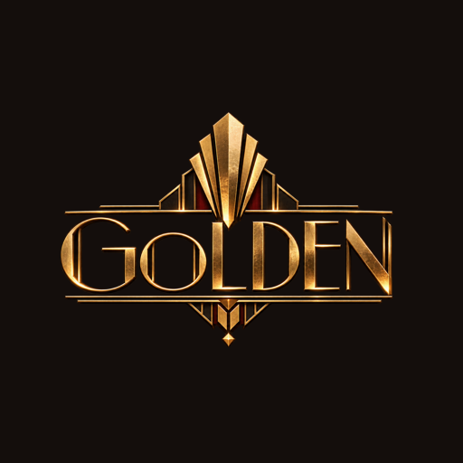

Terms of Service / Términos de servicio
Last updated: 2026-11-21
Service
Golden VR Salon is a community VRChat world. Connecting Patreon is optional and only unlocks supporter perks.
Perks
Perks depend on an active membership and may change or end. Payments and refunds are handled by Patreon under its own terms.
Conduct
You must follow the VRChat Terms and the world rules. We may remove perks or access for abuse, harassment or attempts to exploit the world.
No warranty
The service is provided "as is", without guarantees of availability.
Changes and contact
We may update these terms; the date above will change. Contact us on Discord. See also our Privacy Policy.
Resumen en español: conectar Patreon es opcional y solo da beneficios en el mundo; los pagos los gestiona Patreon; el mal uso puede quitar beneficios.